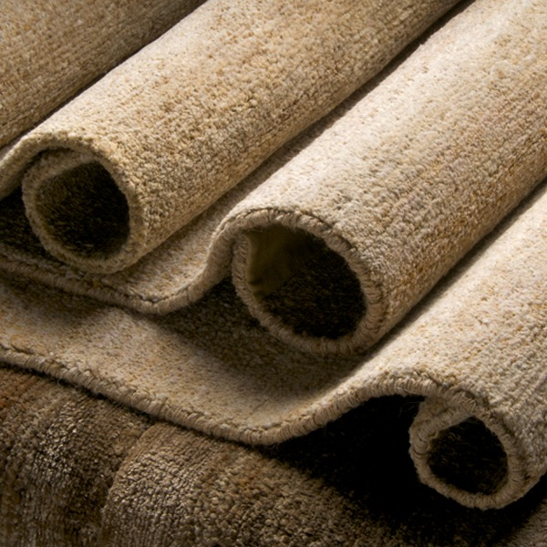
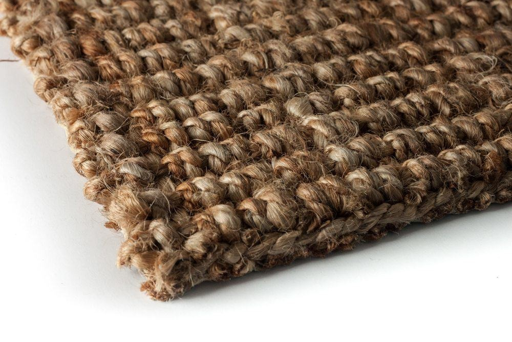
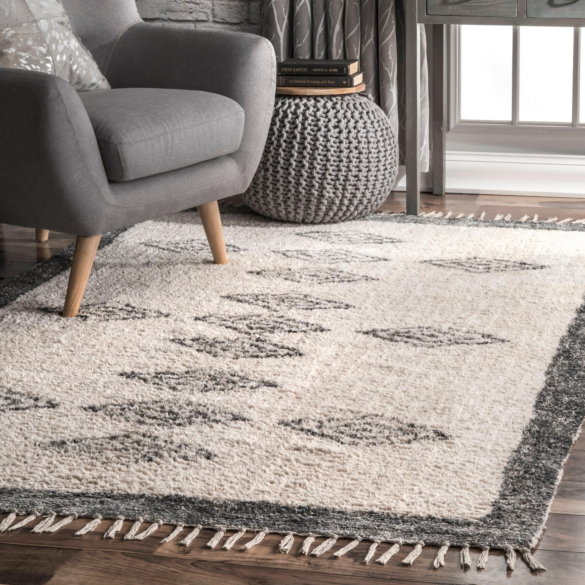
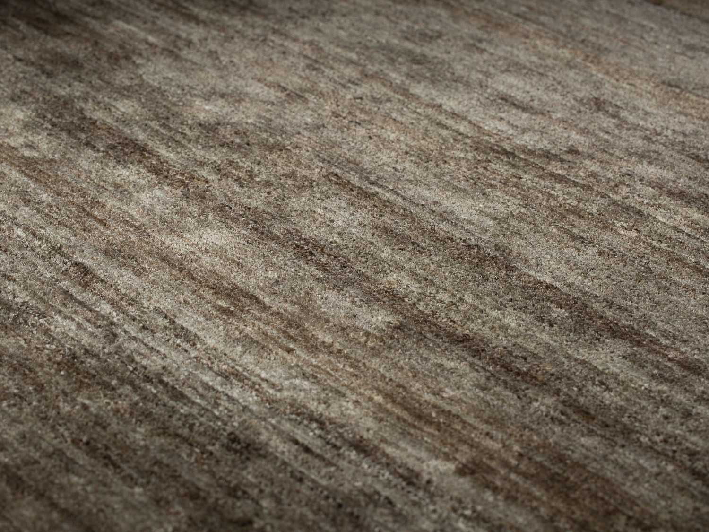
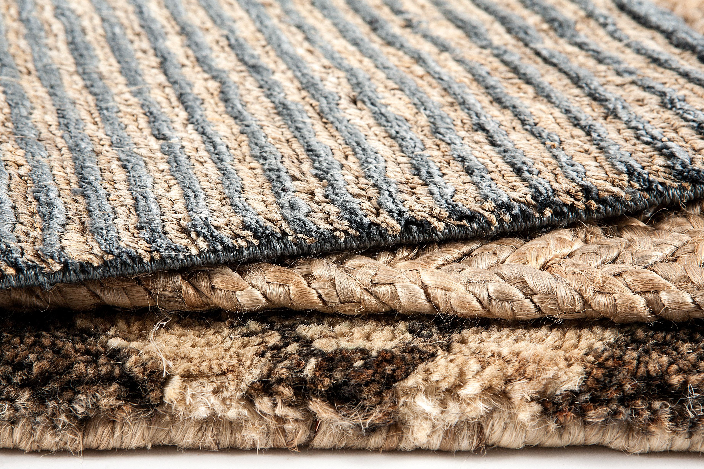
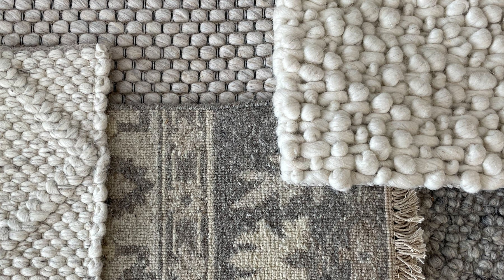
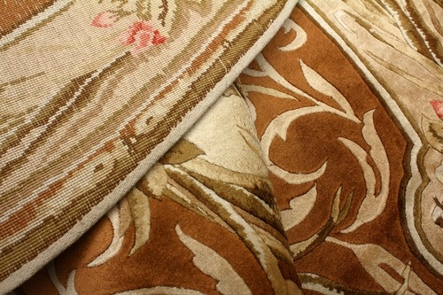

Materials
Nettle

is a natural, eco-friendly fiber known for its
durability, softness, and sustainability.
Traditionally hand-harvested and woven into fine
threads,
fibers create rugs that are both strong and
naturally resistant to wear. Its unique texture
gives rugs a rustic yet elegant appeal, making it a
perfect choice for those who value sustainable
living without compromising on style. Additionally,
rugs are biodegradable and hypoallergenic, ensuring
a healthier home environment. By choosing
nettle-based rugs, you support ethical craftsmanship
and eco-conscious design.
Hemp

rugs are a perfect blend of durability,
sustainability, and natural beauty. Made from
eco-friendly
fibers, these rugs are not only biodegradable but
also incredibly strong, making them ideal for
high-traffic areas. Their earthy texture and rustic
charm add warmth and character to any space, while
their natural resistance to mold and mildew ensures
long-lasting freshness. Whether you're looking for a
timeless, handwoven piece or a contemporary design,
rugs offer an environmentally conscious way to
enhance your home with style and comfort.
Flax

is a durable, eco-friendly fiber known for its
strength, softness, and breathability. Derived from
the
plant, this natural material is widely used in rug
weaving due to its resilience, moisture-wicking
properties, and timeless appeal.
rugs are not only sustainable but also add a touch
of organic elegance to any space. With their natural
texture and earthy tones, they blend seamlessly into
modern and traditional interiors, making them a
perfect choice for conscious homeowners looking for
both style and sustainability.
Cactus

are the perfect blend of beauty and resilience,
making them an excellent addition to any home decor.
Their low-maintenance nature and striking appearance
complement both modern and traditional interiors.
Whether placed beside a luxurious rug or as a
centerpiece on a cozy corner table,
bring a refreshing natural element to your space.
With their ability to thrive in various
environments, they symbolize endurance and timeless
elegance—just like a well-crafted rug. Add a touch
of greenery to your home and create a harmonious
balance between nature and design.
Banana

, with their vibrant yellow hue and soft texture,
have long been a symbol of freshness and vitality.
Just like the natural beauty and vibrant colors
found in our rugs,
represent the simplicity and warmth that can
transform any space. Inspired by nature’s most
cherished fruit, our collection of rugs brings the
brightness of organic elements into your home,
creating a welcoming atmosphere that mirrors the joy
and energy a banana brings to your day. Embrace the
cheerful spirit of
in your home with our expertly crafted,
nature-inspired rugs.
Wool

is a natural, durable, and luxurious material that
has been used for centuries to create high-quality
rugs. Renowned for its softness, warmth, and
resilience,
is perfect for maintaining both comfort and style in
your home.
rugs are not only long-lasting but also naturally
stain-resistant and easy to clean, making them ideal
for high-traffic areas. With its ability to retain
vibrant colors and patterns,
offers timeless beauty and elegance that can elevate
any room. Choose
for your next rug and enjoy its luxurious feel and
lasting quality for years to come.
Silk

, renowned for its luxurious texture and timeless
beauty, has been a cherished material for centuries.
Made from the fibers of silkworm cocoons, this
natural fabric is celebrated for its durability,
softness, and lustrous sheen, making it a premium
choice for high-quality rugs.
rugs not only exude elegance but also display
intricate designs with unparalleled clarity, thanks
to the fine threads that allow for detailed
craftsmanship. Their vibrant colors and resilience
enhance any space, adding a touch of sophistication
and warmth. Choosing
rugs is an investment in both artistry and
longevity, perfect for those who value style and
quality.
A strong foundation begins with the finest threads. Choose quality, craft with care, and create comfort that lasts a lifetime.